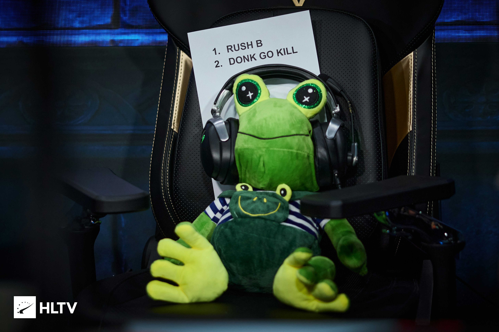
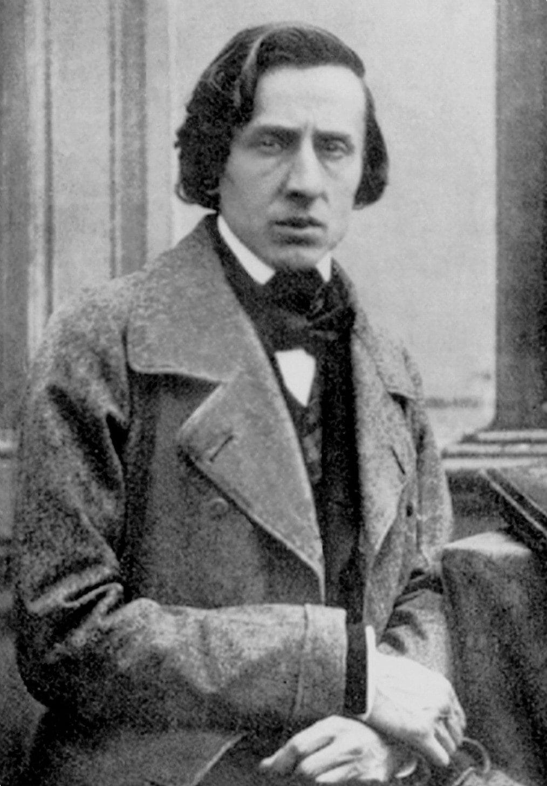

Noticia del dia 28/09/2026
El conocido Coach del equipo Spirit ha muerto esta mañana a las 8AM en el hospital CHINIKO de Tokio, tras una larga enfermedad. El equipo Spirit ha publicado un comunicado en sus redes sociales en el que lamenta la pérdida de su entrenador y amigo.
Jab-Jabich tuvo una carrera corta pero con muchos logros, entre ellos 2 Majors y un total de 43 trofeos. Sus logros y su legado serán recordados por siempre en el mundo de este deporte.

Jab-Jabich ha estado enfermo durante los últimos 2 años, y la tuberculosis ha sido la causa de su muerte. Estuvo acompañado por sus familiares en todo momento.

La enfermedad de la tuberculosis ha matado a muchas personas a lo largo de la historia, entre ellos el famoso compositor Chopin, quien murió a los 39 años de edad en París.
Enlace de la carrera del personaje , el articulo lo he inventado :
HLTV.COM "JAB-JABICH"